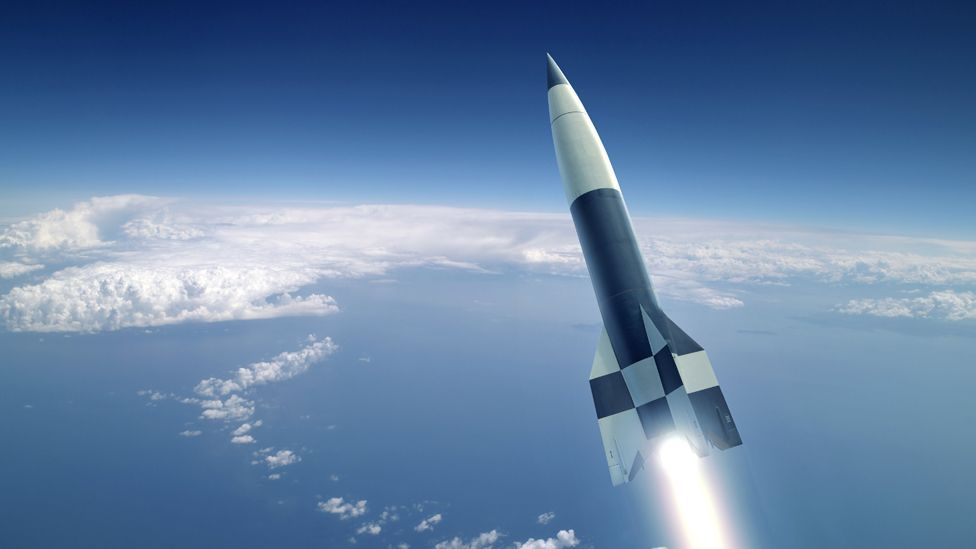

1 / 10
Konstantin Tsiolkovskypublishes papers theorizing about powering rockets with liquid fuel instead of solid fuels. Robert H. Goddard also publishes a paper 12 years after (1915) regarding his experiments about liquid oxygen and gasoline as fuel for powering a small rocket successfully.
2 / 10

Dr. Hermann Oberth makes papers regarding rocket travel during 1923. This served as the inspiration for the German missile V2 (A liquid fuel powered missile) that was supposed to be used against England. However, the rocket was made too late to be used by Germany.
3 / 10
October 4, 1957
Sputnik 1. The genesis. The beginning of a new era of space exploration. The name Sputnik was derived from “wayfarer” and was the first artificial satellite to enter the Low Earth Orbit. Its purpose was simple: to test the limits and capabilities of manmade objects in space. It sent signals to the Russian space stations for 3 weeks until its zinc batteries ran out and it lifelessly orbited the planet for 2 months, before falling back down.
4 / 10
October 1, 1958
The birth. The christening of one of the greatest space research facilities. The National Aeronautics and Space Administration, formally known as NASA, was released due to the rising tension in the Russian-US space race. This administration would move on to make the greatest shuttles and telescopes for traversing and investigating the great beyond.
5 / 10
January, 1959
The Lunar pioneer. The first artificial satellite that went beside our only natural satellite. Luna 1 is a Russian spacecraft that was able to reach a heliocentric orbit. It carried the sufficient tools to be able to study interplanetary matter.
6 / 10
April, 1961
The shuttlecock to space. The capsule that encapsulated the hearts of those spectating from below. The VOSTOK 1 is a Russian spacecraft that was operated by Yuri Gagarin, the first cosmonaut, first human, first species, first living being to fully feel the vast emptiness of space. The Vostok-1 flew for 108 minutes, fully orbiting the Earth, before going back down.
7 / 10
July, 1962
The darers. The spacecrafts that were sent to explore the subnautica of stars. From July 1962 to November 1963, NASA launched 10 rockets named The Mariners, with one mission: To reach other planets. 3 were able to reach Venus, 4 reached Mars, and 1 was able to get to Mercury. These launches were the first major success the US had over the Russians in the Space Race.
8 / 10
1961-1966
The Announcers. The spacecrafts sent out of this world to help in the development of the future out-of-this-world technology. Yet again does NASA send another group of drones named The Rangers to try and send data of the moon back to Earth, in preparation for the storm of events that is about to come.
9 / 10
July 20, 1969
The Announcement. "One Small Step for Man, One Giant Leap for Mankind." The space race ended with a bang, when the rocket Apollo 11 made it to the moon. But there's one small thing added: an astronaut, Neil Armstrong, inside. With the aid of a pressure suit, he was able to walk around the moon and plant a flag of the United States. this astronomical discovery has touched many hearts alike, no matter the gender, race, or age. This is one of the few times where all of humanity were united with one interest in mind.
10 / 10
The Future. We have invented and engineered better rockets, like Juno, which was designed to enter Jupiter's orbit to make observations on it. Though NASA is no longer alone in it's space expolrations. The new race for space has also been dominated by other countries, like Roscosmos (Russia) and the ESA (Europe). Private companies have also taken to the skies, like SpaceX, and Boeing. Nobody knows what the future holds, we can only find out...
❮
❯